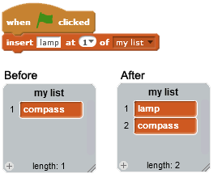

Você pode especificar o local para inserir o item escolhendo no menu suspenso ou digitando um número. Ao escolher "aleatório", a inserção é feita em um lugar aleatório na lista. Ao escolher "último", a inserção do item é feita no final da lista. O comprimento da lista aumenta em 1.

Você pode indicar em que lugar da lista deseja adicionar um item.
insere o item em um lugar específico da lista.
insere o item em um lugar aleatório da lista.